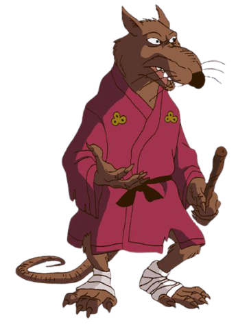

LES RÈGLES DU JEU
Qui de mieux pour vous expliquez les règles du Turtles SHI-FU-MI que Maître SPLINTER!
Le jeu SHI – FU – MI est un petit jeu convivial qui se joue normalement avec les mains à un contre un. Ici le jeu a été adapté informatiquement sur le thème des TORTUES NINJA. Mêlant hasard et prise de décision ce petit jeu trouve ses origines en Chine ou il était appelé « Shoushiling ». Venez découvrir les règles du SHI – FU – MI , petit jeu simple et marrant qui ravira petits et grands.
Les différentes formes de main du SHI – FU – MI TURTLES
La carapace

Élément incontournable pour une Tortue Ninja, LA CARAPACE représente ici LA PIERRE. Rigide et protectrice LA PIERRE écrase LES CISEAUX, donc ici LA CARAPACE écrase LES SAÏ et gagne!
La carapace
Élément incontournable pour une Tortue Ninja, LA CARAPACE représente ici LA PIERRE. Rigide et protectrice LA PIERRE écrase LES CISEAUX, donc ici LA CARAPACE écrase LES SAÏ et gagne!
La pizza
Alimentation principale des Tortues Ninja! Dans ce jeu LA PIZZA représente LA FEUILLE, souple et maléable LA FEUILLE recouvre LA PIERRE, donc ici LA PIZZA recouvre LA CARAPACE et gagne!
La pizza
Alimentation principale des Tortues Ninja! Dans ce jeu LA PIZZA représente LA FEUILLE, souple et maléable LA FEUILLE recouvre LA PIERRE, donc ici LA PIZZA recouvre LA CARAPACE et gagne!
Les saï

Armes saillantes de RAPHAELO, LES SAÏ représentent ici LES CISEAUX, tranchants et métaliques LES CISEAUX coupe LA FEUILLE, donc ici LES SAÏ coupent LA PIZZA et gagne!
Les saï
Armes saillantes de RAPHAELO, LES SAÏ représentent ici LES CISEAUX, tranchants et métaliques LES CISEAUX coupe LA FEUILLE, donc ici LES SAÏ coupent LA PIZZA et gagne!